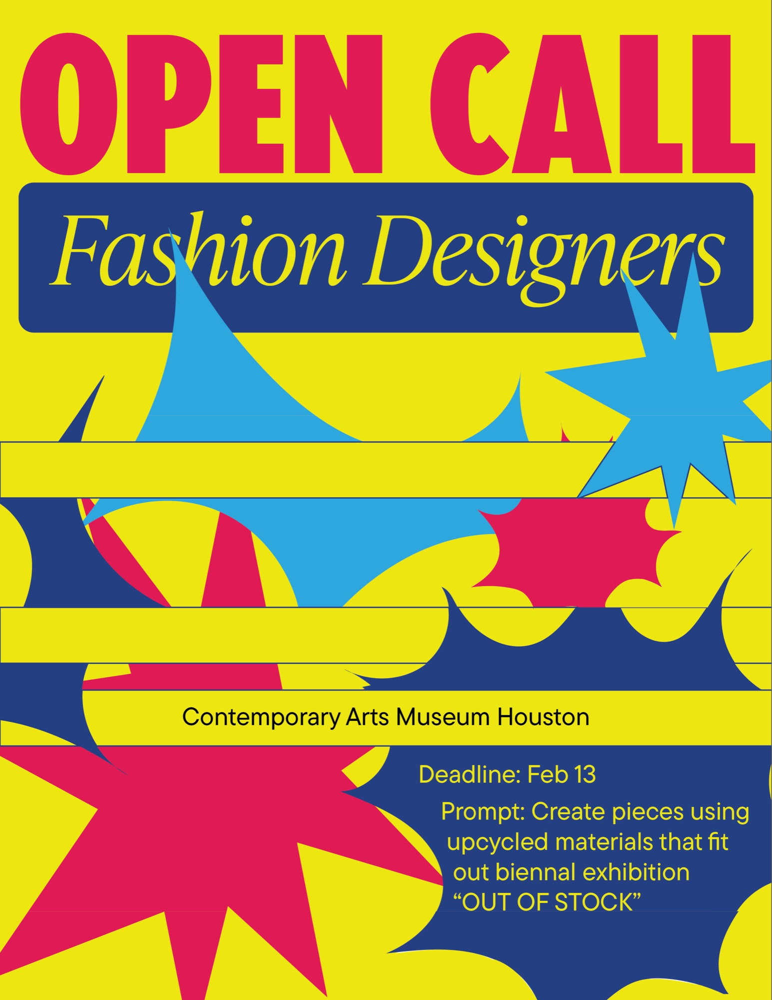
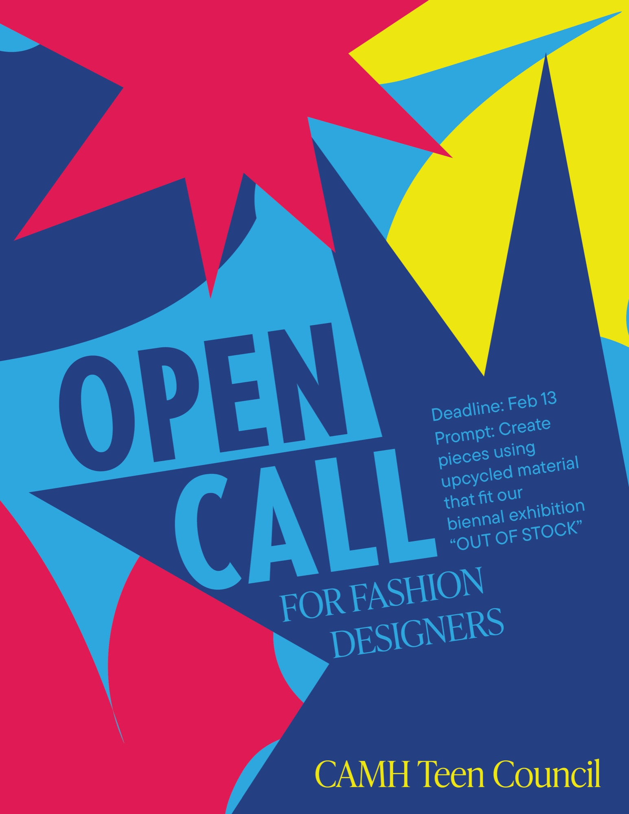

Contemporary Arts Museum Houston — Poster Design
I made these posters for an open call for fashion designers under the theme of “OUT OF STOCK,” which discusses environmental distress in the modern age.
I used fonts and colors inspired by packaging labels, representing over-consumption, then used long rectangles to similarly mirror the tape that wraps across packages. The bright shapes show how creativity and innovation can break past our typical ways of consumption to reduce environmental distress.

Other Poster Variant
